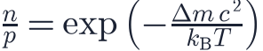
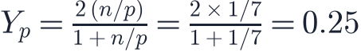
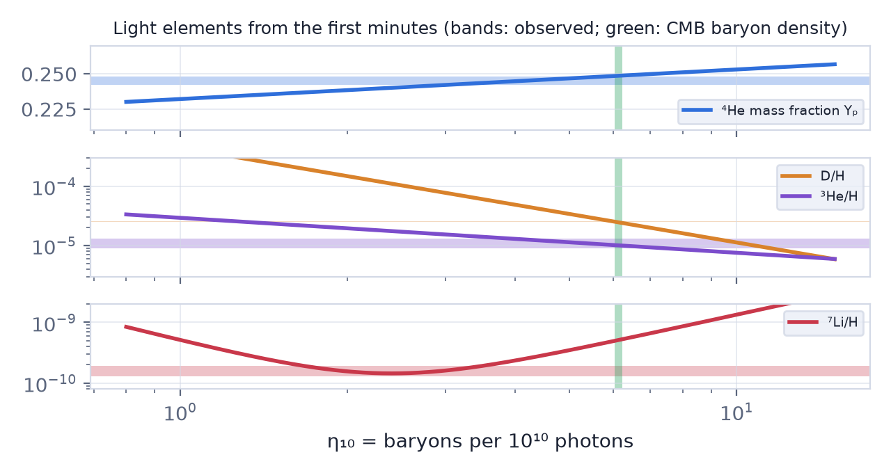

In this lesson you will learn
|
A cosmic nuclear reactor
About one second after the Big Bang the universe was at  K and contained
photons, neutrinos, electrons, positrons and a small sprinkling of protons and
neutrons. Within the next twenty minutes some of these protons and neutrons fused
into light nuclei. This process is called Big Bang
nucleosynthesis (BBN).
K and contained
photons, neutrinos, electrons, positrons and a small sprinkling of protons and
neutrons. Within the next twenty minutes some of these protons and neutrons fused
into light nuclei. This process is called Big Bang
nucleosynthesis (BBN).
A prediction confirmed BBN predicts the amounts of helium-4, deuterium, helium-3 and lithium-7 using only well-tested nuclear physics and one unknown number: the density of ordinary matter. The agreement between prediction and observation is a cornerstone of the Big Bang theory. |
Step 1: freezing the neutron-to-proton ratio
At very high temperatures, weak interactions with neutrinos and electrons constantly turn protons into neutrons and back. A neutron is slightly heavier than a proton, by MeV, so in equilibrium there are fewer neutrons:

These weak reactions freeze out (lesson L4.2) at about MeV, when . Afterwards free neutrons slowly decay, with a mean lifetime of about 880 seconds, into protons.
Step 2: the deuterium bottleneck
The first step towards heavier nuclei is deuterium (one proton plus one neutron), bound by only 2.2 MeV. At first, high-energy photons break deuterium apart as soon as it forms.
Why wait so long? The typical photon energy drops below 2.2 MeV after less than a minute, but there
are about |
By then neutron decay has lowered the ratio to .
Step 3: helium
Once deuterium survives, reactions quickly build helium-4, the most tightly bound light nucleus. Practically all remaining neutrons end up in helium-4, which contains 2 neutrons and 2 protons. Counting masses, the helium mass fraction is

Check the arithmetic Take 16 nucleons: with there are 2 neutrons and 14 protons. The 2 neutrons combine with 2 protons into one helium nucleus of mass 4. So 4 of the 16 units of mass, 25%, are helium; the other 12 protons remain hydrogen nuclei. |
Observations of the oldest, least polluted gas clouds give , in excellent agreement.
Why no heavier elements?
There are no stable nuclei with 5 or 8 nucleons, which blocks the easy routes to heavier elements. Moreover, the universe keeps cooling and thinning, so after about 20 minutes the nuclei no longer have enough energy to fuse. Only tiny traces of lithium-7 were made. All carbon, oxygen, iron and the other heavy elements were forged much later in stars.
Deuterium: a baryon density meter

Leftover deuterium is very sensitive to the density of ordinary matter: the more baryons, the more efficiently deuterium is burned into helium, so more baryons means less deuterium.
Measurements of deuterium in distant gas clouds, seen in absorption against quasars, give . BBN then requires
Two methods, one answer The cosmic microwave background, formed 380 000 years later by completely different physics, gives the same value of . This is why we are confident that ordinary matter is only about 5% of the universe, and that dark matter must be something else. |
The figure is often called the Schramm plot, after the cosmologist David Schramm. All four elements are predicted by a single number, the baryon-to-photon ratio , and the green band shows the value measured independently from the CMB.
Try it: BBN Abundance Explorer In the BBN Abundance Explorer, press "From deuterium" and check whether the result lands inside the CMB band. Then find the lithium dip. |
The lithium problem Observed lithium-7 in old stars is about three times lower than BBN predicts. It is not yet clear whether this points to stellar physics that destroys lithium, measurement issues, or new physics. |
Remember this
|